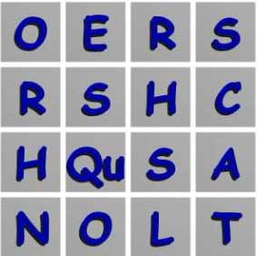

Lab 7: the Game of
BOGGLE via Recursion & Backtracking + Pruning Heuristic
Lab 7 is our next encounter with backtracking ans recursion (like the swamp). You will have 2 weeks to write it. You will use the BST class. Recall that backtracking is a technique whereby an algorithm recognizes it is impossible or unnecessary to search any deeper into the search space from a given point. An example of this is finding your way through a maze. When you hit a dead end you mark that path as a dead end and don't go down that path any more.
You will solve a problem that would be impossible to solve without a good heuristic to abandon dead ends and save vast amounts of wasted searches (and thus vast amounts of time).
The game of Boggle is a board game that uses 16 dice arranged in a 4 x 4 grid. Each dice is 6 sided and each side contains a letter of the alphabet. Occasionally the string "Qu" will appear on a dice face. A typical board will look like this.
A typical Boggle game usually starts by shaking the dice on the board thus creating a new grid of letters on the game board. The object of the game is for each player to form as many valid dictionary words as possible by connecting adjacent letters in any direction without any cycles. Think of how a King can mode an a chessboard - across, up ,down or diagonal. You can generate words by connecting letters in any direction as long as you don't create cycles. Thus in a 4x4 grid you could form words a long as 16 characters (well.. 17 if you hit a "Qu" dice).
You will be surprised at home many unique strings you can generate from even a 2 x 2 grid. A 2 x 2 grid can generate 64 unique strings. A 3 x 3 can generate over 10,000 and a 4 x 4 c generates several million. A 5 x 5 generates trillions and larger grids are astronomical. There is no closed from expression to calculate the number of string that can be formed from an N x N grid. The only way to calculate that number is to actually generate all those strings with a program and count them as you form them.
In order to avoid forming all possible strings to find the good (dictionary) ones, you will need to use a heuristic to prune the search space. You must recognize that in many cases (the vast majority, in fact) you should not bother forming new words that start with a word you have already searched for but failed to find. The heuristic works like this:
Every time you form a word from letters in the grid, you will search the dictionary for that word. Your search method (from the Tree class) will be modified such that every time it compares the search word to the ones in the dictionary, it will remember if that word was a pre-fix of any dictionary words it encountered in the search. If the search comes back false (not found) then this prefix (true/false) flag becomes meaningful. If a word was just searched for, but not found, AND it was not a prefix of any word it encountered in the dictionary, then we can conclude that no word we might ever form based on that word would ever be in the dictionary.
Suppose we search for the word
"grt" and the search returns false. Furthermore assume that at no time during the search , did our search word match as a prefix of any of the words compared to. The prefix flag for that search will be set to false. This means we should not form any more strings from the grid that begin with this search word. Why? Because our prefix flag foretells us that we won't find any words in the dictionary that start with that search word - so why form and search them ?If you implement the heuristic correctly your program will solve any size grid (even 30x30 or more ) in very short time ( less than a second as opposed to days or centuries!) because the vast majority of the possible strings are not prefixes of valid words and thus most of the search space is pruned out. Incidentally this heuristic is "lossless". It is the definitive heuristic for this problem . It never prunes searches that could have yielded valid words, yet prunes a huge majority or useless searches.
Download the Lab7.zip file. You should see the following files:
First Step: Write a program that does what the demo program does - just prints out all possible strings. Once you have this done you have accomplished the hard part.
Once your starter code can generate all possible strings like the Demo program, Your remaining task is to enhance that program in 3 significant ways to reach the final solution:
First: You will add 2 (TWO) BSTs to the Boggle class. The first will be the dictionary ("scrabble.txt" again). The second tree will hold all the words from the grid that were also found in the Dictionary. The game of Boggle is the game of searching thru a 4Nx N grid of letters and finding as many legal dictionary words in it as possible.
Second: You must modify the Tree class: You must add a boolean data member to your tree class. Call it "prefix". You must set it to FALSE before each word search. Inside your searchHelper() you must compare the search word to every word in the dictionary and see if that search word is a prefix of the dictionary word. If it you ever encounter a comparison where the search word IS a prefix of the dictionary word being compared to then you set your prefix true and leave it true for the rest of the search.
Third: You will add some code to the solveHelper method. The code you add to the solveHelper will be the pruning heuristic described above. The code that you add will examine the prefix flag after every search. If the search failed and the prefix was also false then you should not recurse deeper into the grid and thus not form any new words based on the current search word.
Lastly you will modify your Tree class' inOrderPrint() method to print the words on lines no more than 60 chars long. See my solution.
Your Solution zip file should contain all your source files
Also you must handin a readme.txt file that explains how to run your oprogram - command args etc.
You must have a paragraph in that readme file that gives your best estimate of a formula that computes
the number of possible strings you can form from an n X n grid
for any N x N grid of letters you can form this many possible words: possibleWords = 2 ^ N^N ( 2 to the power N to the N) ... or something like that.